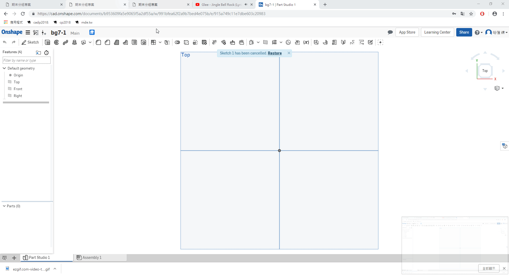
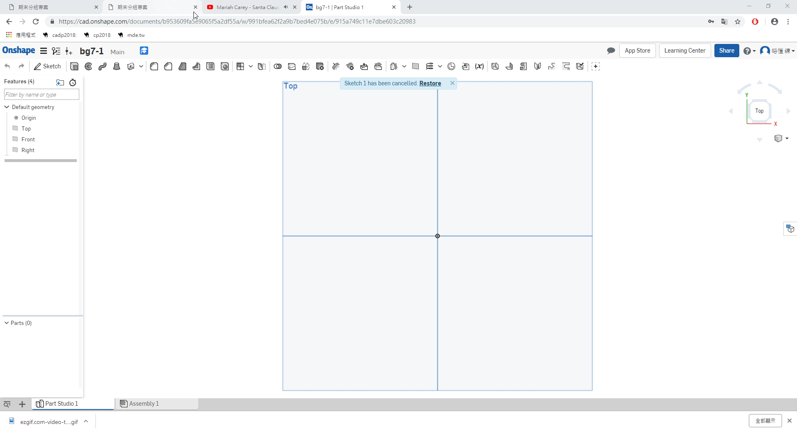
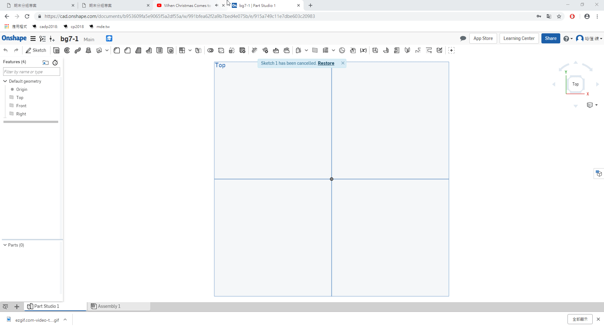
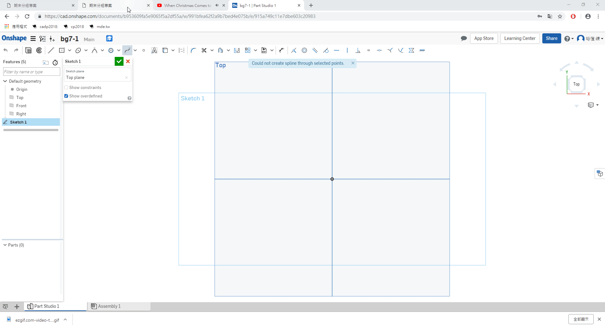
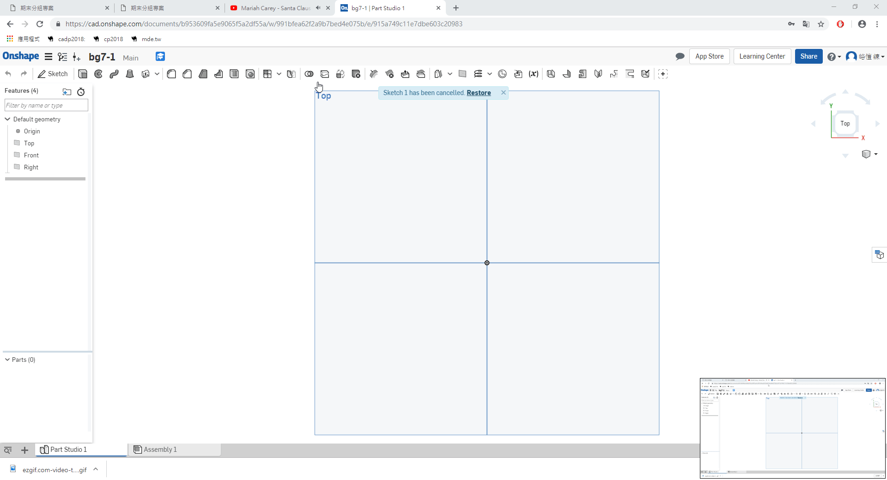
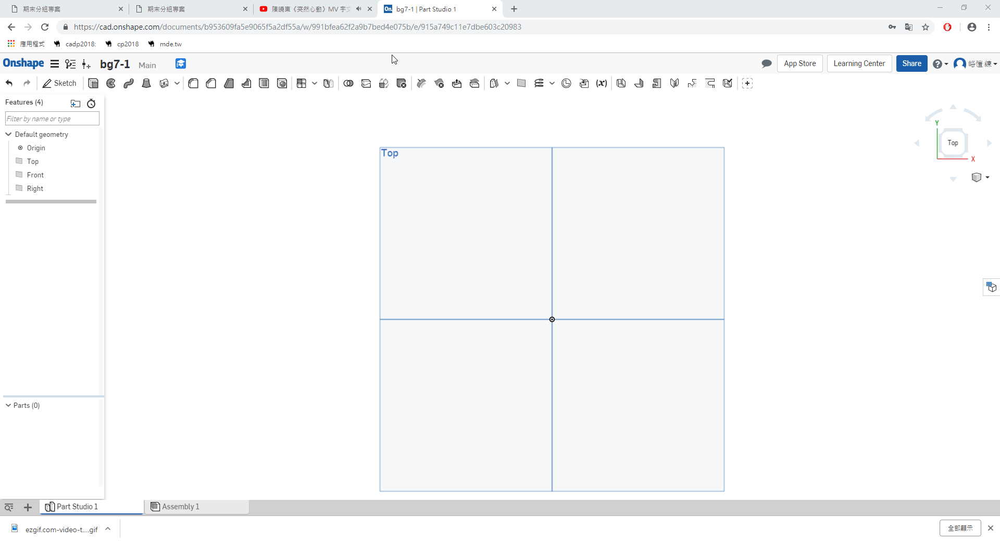
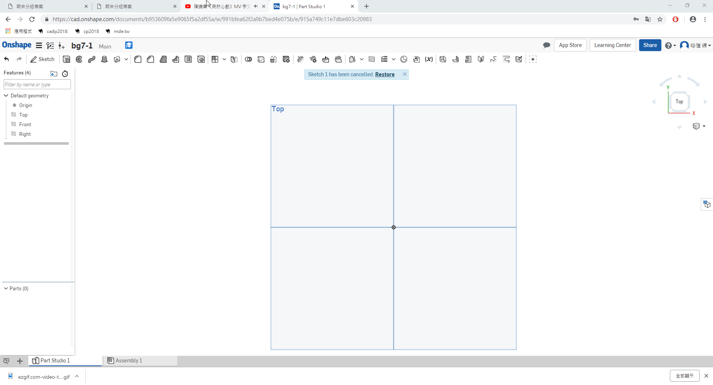

bg7 Final Project Website
Home
Site Map
reveal
blog
Introduction
Course
w9
w10
w11
w14
w15
Onshape
Creating an Account
Create a Documents
DRAW
basis
Advanced
Function and use
Independent Study
week 9
week10
week11
week12
week13
week14
week15
week16
week17
week18
Issue ＆ Solution
Experience
第十週
第十一週
第十二週
第十三週
第十四週
第十五週
第十六週
第十七週
Final Report
Source of the material
Attend＆Absence
DRAW <<
Previous
Next
>> Advanced
basis
1.矩形

2.三點圓
3.切線弧

4.雲行線

5.雲行線打點

6.錐

7.相交
8.修剪

9.草圖圓角

DRAW <<
Previous
Next
>> Advanced